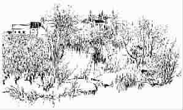

落叶是疲倦的蝴蝶
●朱成玉
夕阳老去，西风渐紧。
叶落了，秋就乘着落叶来了。秋来了，人就随着秋瘦了，随着秋愁了。
但金黄的落叶没有哀愁，它懂得如何在秋风中安慰自己，它知道，自己的沉睡是为了新的醒来。
落叶有落叶的好处，可以不再陷入爱情的纠葛了；落叶有落叶的美，它是疲倦了的蝴蝶。我甚至能感觉到落下来的叶子们轻轻的叫喊。
那一刻，我的心微微一颤，仿佛众多纷纷下落的叶子中的一枚。
我看到了故乡，看到了老家门前那棵生生不息的老树，看到了炊烟因为游子的归来而晃动。对于远走他乡的脚，对于飞上天空的翅膀，炊烟是永不能扯断的绳子。就像路口的大树，它的枝干指着许多的路，而起点只有一个，终点也只有一个，每个离开村庄的人，都带走了一片绿叶，却留下一条根。
我看到了故乡的山崖，看到石头在山崖上，和花朵一起争着绽放；看到羊在山崖上，和云一起争着飘荡。
我看到了我的屋檐，冬天时结满冰凌，夏天时蓄满鸟鸣，一串红辣椒常常被看作是穷日子里的火种。守着屋檐上下翻飞的麻雀，总是那么和谐地与庄户人家好好地过着日子。时时刻刻缠绕着那颗在路上的心的，就是这个屋檐。
我看到了母亲，为了不让我们在冬天里挨冻，她拾起一节节枯枝，犹如把那些破碎的日子一一点缀，然后，把温暖交到我们手上。柴垛越码越高，母亲却越来越矮。我看到母亲那对干瘪的乳房，像两只残缺不整的讨饭的碗，却为我们讨来了一生的盛宴。母亲在灶坑里点燃的红色的昏暗的火焰，成了那些夜里我们唯一可以依靠的肩膀，唯一可以握住的暖暖的手。
叶落归根，是我老了吗？我们花了很多时间去争取财富，却很少有时间享受；我们有越来越大的房子，但却越来越少地住在家里；到月球然后回来，却发现到楼下邻居家都很困难；征服了外面的世界，对自己的内心世界却一无所知。
远行的人，是什么声音使你隐姓埋名？是什么风将你吹往他乡？秋天就是这样，把叶子纷纷抖落，把人的思念纷纷挂上枝头。是该回去了，去看看那棵生下我、让我因成长而绿又让我因成熟而黄的大树，还有落叶里沉睡着的母亲。母亲，我匆匆的脚步就是你密密缝合的针脚。母亲，背着破烂行李的我要归来，找到了天堂的我也要归来。
一层层落叶铺在回家的路上，我要踩着温暖的地毯去看望母亲。母亲也像这落叶，从灿烂的枝头缓缓地落下来，只是，她没有再醒来。
这个世界，能留住人的不是房屋，能带走人的不是道路。岁月无法伸出一只手，替你抓住过往的云。如果一切还能重新拾捡回来，母亲，我要去拾取你的笑容、脚步和风，用你的爱做灯油，用你的善良做捻儿，我要点燃它，放到心里，一辈子不忘回家的路。
天冷了，树的叶子落下来，树离我很近。我似乎听见了它们在缓缓凝固。
天冷了，它们一排一排地站着，心中坚守着的秘密一阵阵地疼痛起来。但叶子落下来，掩盖了一切。
母亲去了，心灵没有了依靠，一下子就有了那种到处漏风的感觉。可是大风一直在刮，把故乡周围的尘土刮了个干净。我小小的故乡正在被秋天所包裹。
母亲的坟上有一棵树，那是我写给母亲的诗。每到秋天，叶子纷纷落下，把母亲的坟头遮盖得严严实实。那些在风中微微呻吟着的落叶，远远望去，像一群疲倦了的蝴蝶，静静地收拢着它们一生的美丽瞬间：一朵红晕，一个誓言，或者是简单的一声叹息。
(王诚摘自《广州日报》2006年10月20日，吴冠中图)